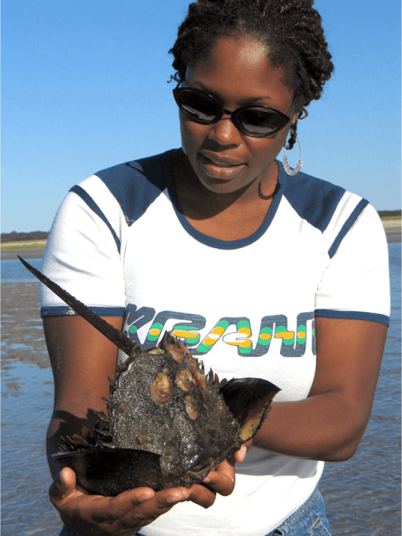

Personal Statement
Basic science exists as a language and a culture all its own. I am a translator and a cultural ambassador. I am a quick learner who possesses strong analytic skills, a collaborative spirit, and a passion for developing new skills and meeting new people. I am fortunate to work in an environment in which I'm exposed to the broad applications of STEM. I am familiar with research and literature in an array of disciplines within the life sciences. I am passionate about communicating science and increasing entry points to educational access especially to under-resourced populations. I look forward to leveraging my scientific training to promote scientific literacy and shape the future of scientific innovation.

Overview of Qualifications
- Concept driven trained empiricist proficient at evaluating, understanding and communicating basic science
- Experienced in developing fun and accessible science curriculum for under-resourced middle- and high school students
- 10+ years of experience with a wide range of techniques in basic laboratory research and data analysis
- Accomplished teacher to diverse audiences, grade 6 through university level
- Capable communicator with a demonstrated ability to work in diverse, collaborative and dynamic environments
- Effective grant and fellowship writer
- Creative and innovative thinker and advocate for interdisciplinary, innovative STEM Education.